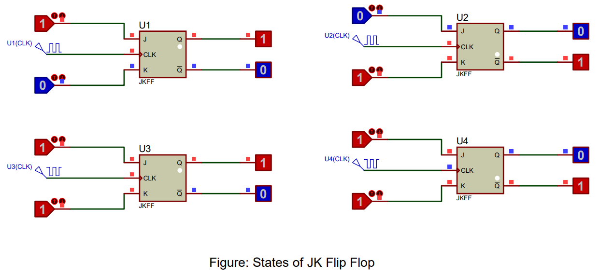
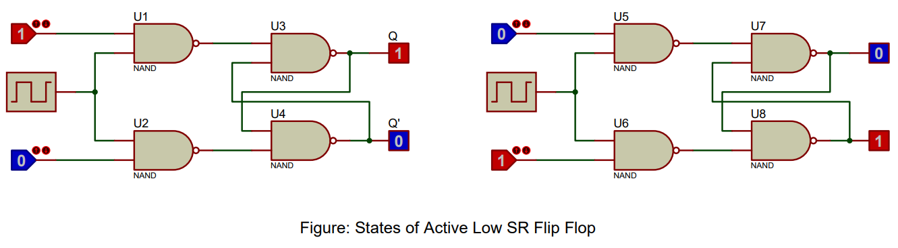

JK Flip Flops: An Essential Building Block in Digital Electronics
In the vast landscape of digital electronics, JK Flip Flops stand as fundamental components. A JK Flip Flop, named after its inventors Jack Kilby and Jerry Kethley, is a type of flip flop or latch that has two inputs: 'J' (set) and 'K' (reset) and two outputs: 'Q' and 'Q'. The uniqueness of JK Flip Flops lies in their ability to transition between states, making them an invaluable resource in memory storage units and sequential logic circuits.
The operational behavior of JK Flip Flops is governed by the following Boolean expressions:
$Q = JQ' + K'Q$
$Q' = KQ' + J'Q$
These expressions utilize a combination of AND and OR operations. They represent the essential functionality of JK Flip Flops, wherein the output 'Q' transitions between states depending upon the values of inputs 'J' and 'K'.
JK Flip Flops are renowned for their versatility and their ability to eliminate the indeterminate state in SR Flip Flops. They are capable of maintaining their state (when J=K=0), resetting (when J=0, K=1), setting (when J=1, K=0), and toggling (when J=K=1).
As digital systems continue to grow in complexity and demand, the necessity for devices such as JK Flip Flops, that can manipulate and store data efficiently, increases. JK Flip Flops find their application in a myriad of complex digital systems like shift registers, counters, and other advanced components of microprocessors and digital signal processors.
Understanding the functionality of JK Flip Flops, their Boolean expressions, and applications can provide invaluable insights into the world of digital electronics and computer architecture.
Mastering the Dynamics of JK Flip Flops
JK Flip Flops are composed of logic gates such as AND, OR, and NOT gates, which function in harmony to facilitate the various binary operations of these Flip Flops. A comprehensive understanding of these flip flops is crucial to harness their potential and drive the development of digital systems.
With a firm grasp of the theory behind JK Flip Flops, we will proceed to put this knowledge into practice. In the upcoming sections, we will learn how to practically verify the truth tables of JK Flip Flops using Proteus software. This powerful platform helps simulate electronic circuits, providing a hands-on experience that enhances your understanding of JK Flip Flops. This practical approach brings to light their pivotal role in digital systems, catering to a range of expertise, from novices to seasoned professionals.
Procedure of Doing the Experiment
JK Flip Flop
Title
Implementation of JK Flip Flop Using 3-input and 2-input NAND Gates in Proteus Software
Aim
To implement and validate the operation of a JK Flip Flop using Proteus software simulation with 3-input NAND (7410) and 2-input NAND (7400) gate ICs.
Requirements
Proteus software, 7410 3-input NAND gate IC, 7400 2-input NAND gate IC, clock signal generator, Logic State, and Logic Probe tools.
Theory
A JK Flip Flop is a refined version of an SR Flip Flop that has no invalid states. It operates with a clock signal and has two inputs, J (Set) and K (Reset), and two outputs, Q and Q' (Q bar). When J and K inputs are both 1 and a clock pulse is applied, the JK Flip Flop toggles. The Flip Flop is implemented with a combination of 3-input NAND gates (7410) and 2-input NAND gates (7400). The behavior of the JK Flip Flop can be understood through its truth table.
Truth Table of JK Flip Flop
| Clock | J | K | Q (Next State) | Q' (Next State) |
|---|---|---|---|---|
| 0 | x | x | Q (Previous State) | Q' (Previous State) |
| 1 | 0 | 0 | Q (Previous State) | Q' (Previous State) |
| 1 | 1 | 0 | 1 | 0 |
| 1 | 0 | 1 | 0 | 1 |
| 1 | 1 | 1 | Q' (Previous State) | Q (Previous State) |
Procedure
- Open Proteus, create a new schematic capture.
- Add the 7410 3-input NAND gate IC, 7400 2-input NAND gate IC, Clock Signal generator, Logic State, and Logic Probe (Big) from the pick device menu to the dashboard.
- Place the NAND gates, Clock Signal generator, Logic State, and Logic Probe tools onto the schematic.
- Connect the components to form a JK Flip Flop: J and K inputs connect to the first and second inputs of the 3-input NAND gates, respectively. The clock signal connects to the third input of both 3-input NAND gates. The outputs of the 3-input NAND gates connect to one input of the 2-input NAND gates. The output of each 2-input NAND gate connects to the second input of the other 2-input NAND gate. The outputs of these 2-input NAND gates are Q and Q'.
- Run the simulation and observe the Q and Q' outputs for all possible input combinations of J, K, and Clock signal.
- Verify the simulation results against the expected truth table of a JK Flip Flop.
Result
The simulation results match the JK Flip Flop operation, validating its correct functionality.
Conclusion
The JK Flip Flop has been successfully implemented and its operation verified using Proteus software, confirming its proper operation as a memory device in digital circuits.
Active-Low SR Flip Flop
Title
Implementation of Active-Low SR Flip Flop Using NAND Gates with Clock Signal in Proteus Software
Aim
To implement and validate the operation of an active-low SR Flip Flop with a clock signal using Proteus software simulation with NAND (7400) gate IC.
Requirements
Proteus software, 7400 NAND gate IC, clock signal generator, Logic State, and Logic Probe tools.
Theory
An active-low SR (Set-Reset) Flip Flop is a basic memory device to store a single bit of data, where the inputs are active when low. This version of SR Flip Flop uses a clock signal. It consists of two inputs, Set (S) and Reset (R), and two outputs, Q and Q' (Q bar). The Flip Flop operates in such a way that the Q output is the inverse of Q' output. Here, we will use the 7400 IC which contains NAND gates. The behavior of the active-low SR Flip Flop can be understood through its truth table.
Truth Table of Active-Low SR Flip Flop
| Clock | Set (S) | Reset (R) | Q (Next State) | Q' (Next State) |
|---|---|---|---|---|
| 0 | x | x | Q (Previous State) | Q' (Previous State) |
| 1 | 1 | 0 | 0 | 1 |
| 1 | 0 | 1 | 1 | 0 |
| 1 | 0 | 0 | Invalid | Invalid |
Procedure
- Open Proteus, create a new schematic capture.
- Add the 7400 NAND gate IC, Clock Signal generator, Logic State, and Logic Probe (Big) from the pick device menu to the dashboard.
- Place the NAND gates, Clock Signal generator, Logic State, and Logic Probe tools onto the schematic.
- Connect the components to form an active-low SR Flip Flop: S and R inputs go to the first input of separate NAND gates (7400), the second input of the NAND gates connect to the Clock Signal, the output of each NAND gate connects to one input of the other two NAND gates, the outputs of these NAND gates are Q and Q'.
- Run the simulation and observe the Q and Q' outputs for all possible input combinations of Set (S), Reset (R), and Clock signal.
- Verify the simulation results against the expected truth table of an active-low SR Flip Flop.
Result
The simulation results match the active-low SR Flip Flop operation, validating its correct functionality.
Conclusion
The Active-Low SR Flip Flop has been successfully implemented and its operation verified using Proteus software, confirming its proper operation as a basic memory device in digital circuits.